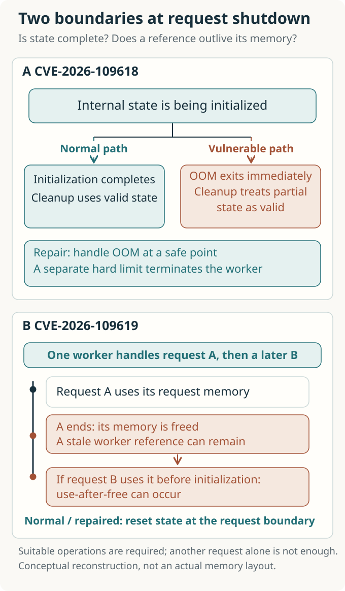
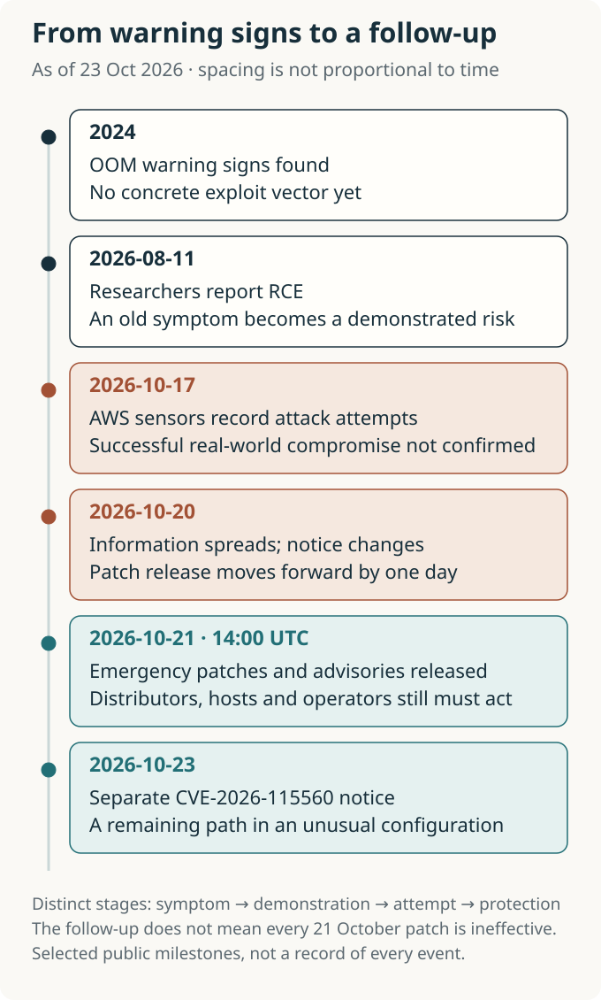
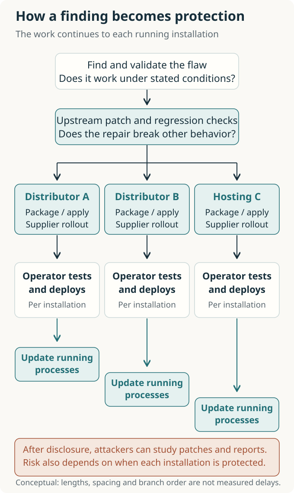

Security in the AI Era: From PHP’s Emergency Repairs to New Foundations
AI helped connect old flaws to working attacks. Beginning with PHP’s emergency repairs, we ask when to leave an existing foundation, what security standards and agent permissions should provide, and how the role of enterprise services might change.

Contents
- How should a failed request end?
- AI changed the meaning of an old warning sign
- What the headline numbers actually count
- The clock was running before disclosure
- Do more discoveries shorten the repair queue?
- The distance between releasing a patch and protecting a user
- Which houses should we repair, and which should we leave?
- What should a new foundation provide?
- Giving agents specific permissions instead of every key
- From maintenance contracts to buying the ability to transition
- References and reading scope
- Authorship and verification scope
What happens when a website’s login screen is properly secured, but the software that produces it fails first?
PHP’s security announcement on October 21, 2026 made that question concrete. PHP is a language servers use to retrieve posts, calculate shopping carts, and assemble pages to send to a browser. These flaws lay beneath an individual shop’s login code, in the PHP engine that executes it. PHP reported that unauthenticated remote code execution (RCE) was possible even before application code began running in mod_php, a configuration that connects the engine to the Apache web server as a module. Carefully written website code alone could not prevent this problem. [1, 2]
News that AI had helped uncover vulnerabilities in this old foundation soon became a sweeping warning. To understand the event, though, we need to unpack the word “discovery.” Noticing an unusual error, proving an attack is possible, observing an attack attempt, and confirming a compromise are different events. Between them lie researchers’ experiments, maintainers’ decisions, distribution packages, and operators’ servers.
The questions in this review unfold in two stages. Can the internet repair flaws as quickly as AI helps find them? And how long should we keep repairing the same foundation? When the wind strengthens, sealing a house’s gaps is urgent. If the cost and risk of repeated repairs keep growing, we must also ask where to rebuild and what materials to use. This is why a story beginning with PHP’s handling of failure leads to security assumptions, standards, and the services that could help organizations make the transition.
How should a failed request end?
When a browser requests a page, the server sets aside working space for that request. Once processing finishes, it releases the space and accepts another request. The running process that does this work is called a worker. A worker can handle many requests in succession, so its lifetime differs from the lifetime of memory belonging to any one request.
Trouble begins when the work ends abnormally. In PHP, an out-of-memory error, or OOM, can occur when a request reaches its configured memory_limit, even while the server still has physical memory available. The old engine could abruptly leave the code it was executing. If that happened halfway through preparing an internal structure, later request-cleanup code could treat the unfinished structure as complete. This is the central problem in the first vulnerability, CVE-2026-109618. [2, 4]
In the second vulnerability, CVE-2026-109619, the lifetimes of request state and memory can fall out of alignment. Memory belonging to request A is released, yet a reference retained by the worker can still point to it. When the same worker receives request B, using that reference before normal initialization can make it treat already-freed memory as valid data. This is called use-after-free. The two vulnerabilities are related, but interruption in the second problem is not limited to OOM. [3]
Imagine finishing a task and throwing away a note, while the index for your next task still lists that note’s location. If another sheet has taken its place, following the index sends you to the wrong information. A program reads and modifies data by following addresses, so a mismatch in lifetimes can cause memory corruption. The analogy explains the expiry of a location’s validity; a stale reference by itself does not guarantee a successful attack.
Read the upper part of the figure as cleanup consuming data whose initialization was interrupted. The lower part shows request B following a surviving reference after request A’s memory has been released. Both concern a request boundary that should remain safe.

The fixes can be understood in the same terms. When the configured memory limit is exceeded, the engine handles the error at a safe point in the virtual machine instead of immediately interrupting an internal operation. Exceeding a higher, hard limit terminates the worker immediately. Internal state that must not survive a request is also reset. The repair restores a condition inside the engine: a failed task must not contaminate the next one. Removing a memory limit or hiding an error message would not achieve that. [2–4]
A successful attack can execute code with the web worker’s permissions. That does not automatically grant the operating system’s highest administrative privileges, but the data and secrets accessible to a worker can still make the damage substantial. PHP-FPM, which runs the engine in separate worker processes, also needs attention. Demonstrated FPM paths require suitable application behavior, so the mod_php demonstration before application execution cannot be generalized to every configuration. [2, 3, 5]
AI changed the meaning of an old warning sign
An account in which humans saw nothing for decades and AI finally found the flaw would miss an essential part of the history. According to the PHP Foundation, signs of the OOM problem had already been identified during follow-up work on a 2024 audit. Concrete remote attack paths were not established, however, and proposed fixes carried costs involving compatibility, denial of service, and changes to third-party extensions. The Foundation acknowledged that staffing and decision-making problems had delayed repair. [5]
In 2026, those warning signs acquired new evidence. Calif describes an audit begun in late July, guided by a researcher’s knowledge of earlier PHP vulnerabilities and increasingly focused questions. On August 11, it reported remote code execution arising from the same OOM root cause. Wiz separately contributed demonstrations of several paths and helped with remediation. Showing how an existing flaw leads to an actual attack changes the urgency and priority maintainers assign to it. [5, 6, 7]
OpenAI says Calif used GPT-5.6 Sol. Wiz reports using its own tools alongside Gemini 4 Argon and GPT-5.6 Sol, with models contributing to analysis, repeated experiments, exploit validation, and patch verification. Here, AI enters the work of narrowing and testing hypotheses. If attacks once too complex to make practical can be tested with less effort, defenders have stronger reasons to re-examine old code as well. [7, 8]
These public accounts are not controlled experiments in model performance. They do not establish how models compare under equal time and cost, how many attempts failed, or how much total expert time was required. Wiz’s comparison between one researcher’s week and the months a world-class team might previously have needed cannot be read as a measurement under matched conditions. What the record supports is that work combining models and experts produced real vulnerabilities and patches. Assigning an independent contribution to a particular model, or concluding that anyone could perform the same attack, would require stronger evidence. [6–8]
The nature of the AI risk now becomes clearer. This was a case of AI-assisted investigation changing the practical threshold of exploitation in existing, widely trusted infrastructure. The vulnerable PHP code was not newly written by AI. Attackers and defenders can both use these capabilities. Their net advantage depends on more than a model’s ability to find flaws.
What the headline numbers actually count
News coverage compressed this change into a few striking claims. AP emphasized the breadth of internet infrastructure involved; Axios foregrounded AI’s discovery. A scientific review can add value by asking what the large numbers actually count. [14, 15]
| Widely circulated claim | What the evidence establishes | What it does not establish |
|---|---|---|
| Around 70% of the web | W3Techs reported PHP usage of 69.3% on October 23 among websites whose server-side language it could identify. [9] | The number of exploitable installations or servers, the unpatched share, or the compromise rate |
| Severity of 9.2 | The CVSS v4.0 severity score in both official advisories, which also specify attack complexity and additional conditions. [2, 3] | A 92% probability of attack success or the total scale of damage |
| Mass attacks within 15 minutes of disclosure | A forecast quoted before the patch was released. On October 22, Sansec lowered its initial assessment of the likelihood of mass exploitation. [11, 16] | A measured starting time for widespread compromise |
| Attacks before disclosure | AWS reported attempts reaching its sensors from October 17 onward. [10] | Success against real servers or whether attackers used AI |
These distinctions help us assess the threat accurately. Incomplete public exploit code failing against a default installation does not invalidate researchers’ working demonstrations. Equally, success in several tested settings does not mean the same input works against every PHP installation on the internet. The existence of a vulnerability, an exploit’s portability, and the harm it causes require separate measurements. Sansec’s revised assessment illustrates the distance between them. [11]
The material reviewed by the cutoff date cannot establish a worldwide total of successful compromises or the monetary harm AI prevented. Leaving those quantities unfilled makes it easier to read subsequent observations correctly.
The clock was running before disclosure
Publishing every detail immediately after finding a vulnerability can leave users exposed while fixes are still being prepared. Coordinated vulnerability disclosure gives developers time to repair the software and distributions and hosting providers time to prepare updates. At the same time, widening the circle of people who know the secret raises concerns about leaks and independent rediscovery. OpenAI’s proposed response process similarly puts maintainers at the center of preparations with relevant organizations before publication. It is a proposal from a participant in this response, rather than a universally applicable standard with independently demonstrated effectiveness. [8]
The PHP Foundation says spreading information prompted it to bring the release forward from October 22 to October 21. Even with a fix ready, many operators cannot apply it immediately without distribution packages. Earlier disclosure reduces the burden of keeping a secret while also shortening the preparation time available to users whose updates are not ready. [5]
A more important observation reaches outside the disclosure date. AWS says MadPot, its honeypot system for observing attacks, recorded an attempt on October 17 and additional attempts before disclosure on October 21. It explicitly leaves open whether these would have succeeded against real production systems. This record does not show that attackers preceded the AI-assisted discoveries in August. It does show that we cannot assume attackers remained unaware until formal disclosure. The observation alone cannot tell us how information reached them, whether they rediscovered the issue independently, or whether they used AI. [10]
The next figure puts these dates in order. The threat clock should not be read as starting when disclosure occurred on October 21. The separate October 23 announcement remains visible too, because deployment of the first patches can overlap with investigation of further paths.

A single rule to disclose as late or as early as possible cannot remove this tension. Decisions change with the information already exposed, evidence that attacks actually work, and the distributors still preparing updates. As AI lowers the cost of reinterpreting the same clues, defenders’ preparation time becomes a resource that must be continually reassessed.
Do more discoveries shorten the repair queue?
A report arriving at a security team begins a new task. Someone must reproduce it, determine whether it shares a root cause with an earlier report, assess the real risk, and check that a fix preserves normal behavior.
In an October 14 account of its work, PHP’s security team said it had published 15 CVEs since July 1 and closed 106 reports because they were not vulnerabilities, were duplicates, or could not be reproduced. This is not a statistic showing that all 106 were AI-generated false positives. The team describes easier AI-assisted report writing increasing incoming volume, while it also uses AI to help examine reproducibility and group reports with a common cause. People make the final judgments and write or review patches. [12]
A simple principle of queues applies here. When incoming work grows without a matching increase in the capacity to verify and finish it, work accumulates. Genuine findings can wait for scarce repair staff; dismissing incorrect reports also consumes time. PHP’s data alone cannot tell us how much its queue will grow. Making reports easier to produce and making them quicker to resolve are different tasks.
Evaluating AI security tools by the number of vulnerabilities found therefore misses an important bottleneck. We also need to ask whether reproducible, valid reports increase, whether reviewer time falls, whether patches ship without regressions, and whether more installations become protected. This is why support for tools belongs alongside support for people who develop a lasting understanding of the code.
The distance between releasing a patch and protecting a user
Repairing the core code leaves a long path ahead. Distributions adapt the fix to their supported versions, while hosting providers test it across customer environments. Operators identify affected installations, update them, and check that running processes actually use the new code. NCSC advised organizations to identify PHP inside products and internal systems and follow suppliers’ updates. A web application firewall can block some requests and buy time, but it cannot be treated as a substitute for repairing the engine. Cloudflare’s deployed protections are an example of this intermediate defense. [13, 17]
Follow the figure from discovery to updated running processes along each path. A paper or press release draws attention to the earlier stages, but protection for a user is completed at the final installation. The bottom box shows that attackers can analyze publicly available information too. They seek targets where an attack’s conditions hold, while defenders must repair the varied environments they manage. This is a difference in the structure of the work, not a finding that attackers are faster in every setting.

For small organizations, the difficulty extends beyond access to a capable model. They may not know where PHP is embedded, may fear an update will interrupt essential work, or may lack the budget to replace an unsupported product. NCSC’s call to prepare for a “vulnerability patch wave” addresses the possibility that accumulated technical debt will return as many simultaneous repair tasks. Automation can reduce repetitive work, while testing, recovery, and responsibility for services that cannot tolerate disruption still need to be arranged. [18]
The questions for further research and policy become more concrete. Does providing models to a group shorten the time to actual deployment? How large is the protection gap between organizations receiving advance information and those outside the disclosure circle? Do fixes reach unsupported products and the last installations run by small operators? An improved median can coexist with installations left exposed for a long time; that tail needs separate attention. These are questions to measure, not conclusions already established by this event.
Which houses should we repair, and which should we leave?
The emergency releases were PHP 8.5.12, 8.4.27, 8.3.36, and 8.2.35. Distributions can backport security fixes while retaining an earlier version number, so a number alone cannot settle the status of an individual system. The October 23 follow-up concerns a rare combination of enabled upload-progress tracking and particular changes to session serialization settings. This does not invalidate all of the October 21 patches, nor does one update remove the need to follow later advisories. [1, 11]
Can an ever-faster ability to patch provide a complete long-term strategy? Enterprise systems have long been built around internal workflows, policies, unusual connections, and accumulated operational knowledge. The time an outsider needs to understand such a structure may have contributed to the cost of attacking it. In the PHP investigation, AI assisted precisely this intellectual work: reading code, forming hypotheses, and narrowing attack paths through repeated experiments. If that work becomes cheaper, it becomes harder to keep counting on an expectation that “our system is too unusual for anyone to understand easily.” This case does not prove that every company’s defenses have collapsed. It does give us reason to reassess the costs those defenses rely on. [6, 7]
This concern meets a security principle that predates AI. Saltzer and Schroeder’s 1975 paper set out open design as a principle: protection should not depend on an attacker’s ignorance of the mechanism’s design. Cryptographic keys and credentials must still remain secret. Preserving valuable business knowledge and requiring the structure of access controls to stay unknown for security to hold are different things. [19]
“Leaving the house” also has a place in practical guidance. The UK government’s legacy technology guidance presents retention, retirement, rehosting, replacement with another product, and replatforming as choices to consider together. The end of support and excessive risks of continued maintenance are signals to consider a transition. A function that no longer provides business value can be retired. Valuable work can remain while its execution platform and dependencies change. The question is whether a company’s accumulated knowledge must stay inseparable from an old operating environment. The choice depends on each system’s support status, the feasibility of fixing it, its business value, and the risks of transition. [21]
In this view, an emergency patch can also buy time to move. It reduces immediate exposure while an organization decides what to retain and which dependencies to retire. Migration may require data conversion, validation of business operations, and a period of running both environments. Its success lies in actually removing risky components while keeping the work running, beyond the fact of having bought a new product.
What should a new foundation provide?
The discussion most directly concerned with changing a house’s materials is memory safety. Constraints imposed by a language or execution environment reduce classes of error such as unauthorized memory access and use of freed memory. The memory safety roadmap guidance from CISA, NSA, and other international agencies asks organizations to go beyond fixing individual vulnerabilities and plan which components to transition, and when. It includes gradual approaches that build experience with new code and important components. Translating a PHP application into another language and changing the memory safety properties of the engine beneath it address different layers. [22]
The rules for opening doors can change too. Zero trust architecture authenticates and authorizes a subject’s access to a resource, without granting trust solely because the subject is on the internal network or uses a company-owned device. NIST SP 800-207 described this approach in 2020. The focus moves from passing a broad boundary around a network and then moving widely within it to deciding what trust and permissions are needed to access a resource. This does not repair PHP’s memory flaws. It provides a separate layer for limiting what a compromised actor can do to other resources. [20]
These approaches answer different questions. Memory safety reduces conditions in which dangerous behavior can arise; permissions enforced for each resource reduce how far a problem can reach. Neither follows simply from choosing a standard component. A shared flaw in a widely used component can expose many installations at once, as PHP has also shown.
| Assumption to reconsider | Relationship to verify in the new foundation | Current status of the discussion |
|---|---|---|
| An unfamiliar structure will keep us safe | Does access still require authorization when the structure is known? | The established open-design principle and NIST’s guidance centered on resources [19, 20] |
| We can handle flaws one at a time as they appear | Is there a transition plan to reduce an entire class of memory errors? | International agencies’ memory safety roadmap recommendations [22] |
| An agent given a company account will protect the business | Do services actually check the actor, the target, and the permitted action? | Existing OAuth specifications and security recommendations, alongside ongoing work on agents [25–28] |
| Moving to a new platform completes the transition | Are support, updates, recovery, and a route to the next migration still available? | Guidance on managing legacy technology and supplier lock-in [21, 23] |
The last row matters. Cloud and managed services can transfer some updating and operational work to specialist providers, but they can also host the same old code. Deep integration with one provider can make a later move expensive. The UK guidance on cloud lock-in asks organizations to assess benefits alongside switching costs and to plan for data export and alternatives. Finding a better position means securing the option to leave it again, as well as acquiring a new address. [23]
Giving agents specific permissions instead of every key
As AI assists attackers’ analysis and begins taking on internal business work, another problem emerges. If a more capable agent receives an existing employee account or a general-purpose API key, the organization adds an actor that can exercise the old permissions much faster. NIST also argues that controls on model behavior alone cannot resolve the problems of identity and authorization. [24]
Suppose a purchasing officer asks an agent to compare quotations. It needs permission to read the quotations, rather than all of the company’s payment powers. The organization needs to distinguish the person who delegated the task from the software actually acting, and specify which actions it may perform at which services, for how long. A document might contain a malicious instruction to “transfer money to this account.” If the payment service checks authorization separately and the agent has no permission to transfer money, that action should be refused. This is an illustrative design constructed for this review, rather than a purchasing procedure prescribed by a standard.
Some of the building blocks already exist. OAuth’s RFC 8693 describes token exchange and represents delegation that distinguishes the subject from an actor acting on its behalf. RFC 9700 recommends limiting access tokens to the necessary target services, resources, and actions. Exchanging a token does not, however, automatically reduce the permissions of a resulting token or propagate revocation from a parent to every derived token. A short lifetime is also different from immediate revocation. Services need implementations that enforce policy and handle cancellation and expiry. [25, 26]
Limiting permissions still leaves room for a bad decision within the permitted scope. If an agent already has payment authority, verifying its identity does not establish that the recipient and amount are correct. Transaction rules and any required separate approval are still needed. This is why we must address both a document’s ability to redirect a model and the system’s decision about whether to permit the resulting action.
These questions are now part of a public standardization agenda. NIST announced its AI Agent Standards Initiative in February 2026, and NCCoE is preparing a project on identity and authorization for software and agents. Its current summary of public comments emphasizes building on existing identity standards, while specific approaches still face unresolved questions. This does not mean a dedicated, comprehensive agent security standard has already been completed. The discussion includes connecting established components to new delegation relationships. Building a new house can preserve materials that are already sound. [27, 28]
From maintenance contracts to buying the ability to transition
The discussion of new foundations leads to what enterprises purchase. The Secure by Design guidance from CISA and international partners emphasizes suppliers’ responsibility for product design, aiming to reduce the cycle in which customers repeatedly bear the burden of monitoring, configuration, and patching. The direction includes reducing the risks and work passed to customers through secure defaults and improvements to root causes, alongside selling automated defensive tools. The principles predate AI but gain renewed importance when AI accelerates discovery and analysis. [29]
Buyers’ questions change too. CISA and the FBI’s Secure by Demand distinguishes a supplier’s protection of its own infrastructure from the security of the products it supplies. It connects questions before a purchase, product security requirements in contracts, and assessment of outcomes afterward. The inquiry extends beyond whether a security certification or internal policy exists to ask about a product’s updates, basic security features, and plans to eliminate classes of vulnerability. This is purchasing guidance, rather than a law imposing identical contracts on every enterprise in a particular country. [30]
These criteria suggest possible future services for systems integrators and managed security providers. Deep knowledge of a customer’s business remains useful. That knowledge can help preserve the work while moving it onto a standard foundation, as well as explain its accumulated exceptions and hidden connections. The value of a service could expand from managing a protective boundary to enabling migration, verifying the result, and preserving the ability to leave again. This is a business proposal from this review, rather than a finding about any particular provider’s current capabilities or future revenue.
What could such a contract establish? Customers could verify whether risky components have actually been retired, delegated powers can be reduced and revoked, failed deployments can be recovered, and data and operating configurations can be handed over when the contract ends. The proposal is for services that let customers test those outcomes, beyond an assurance that a structure is safe because only its specialists understand it. The customer organization must also retain the ability to judge what it has authorized and which risks it has accepted.
The story that began with PHP now calls for two timetables: one for patching to reduce today’s exposure, and another for changing the foundation so that future operations depend less on the same failure modes. Evaluation should reach beyond the number of discoveries and the speed of patching. It should also examine whether classes of defect diminish, permissions after a compromise are constrained, and recovery and subsequent migration are actually possible.
Accepting that the wind is strengthening means developing the ability to decide which house to remain in, alongside the skills to keep repairing it. The standards of a new era are best understood through the relationships they aim to establish: preventing unauthorized action even when a system’s structure is known, limiting the consequences of failure, and making repair and departure possible when needed. The question after AI exposes a crack is whether the time bought by emergency repairs can be used to build that foundation.
References and reading scope
- PHP, 2026 News Archive. October 21 security announcement and fixed versions; October 23 “Informational advisory: Session upload progress.” The dates of these developing announcements were kept distinct.
- PHP, RCE via OOM corruption · GHSA-w8hw-w9fx-j79w. CVE-2026-109618: cause, demonstrated scope, fixes, and CVSS fields. The Foundation’s retrospective and the individual advisory describe the scope of OOM demonstrations on FPM differently; the article retains the more narrowly confirmed conditions.
- PHP, RCE via stale global state · GHSA-6wmf-4rv5-p3rp. CVE-2026-109619: request lifetimes, FPM conditions, worker privileges, and scope of fixes.
- PHP Manual, memory_limit. Soft and hard limits introduced in the October 21 releases.
- The PHP Foundation, Today’s PHP Security Release, and How We’re Strengthening PHP Security. October 21, 2026. Maintainers’ retrospective on warning signs in 2024, repair difficulties, and disclosure coordination.
- Calif, A tale of two PHP remote vulnerabilities. October 21, 2026. Historical clues and the researcher’s investigation, treated as the security research firm’s own account.
- Wiz Research, PHP2Shell: AI uncovers critical RCE vulnerabilities affecting 70% of the Internet. October 21, 2026. Demonstrations, AI use, and timeline. The headline’s 70% and the comparison of work durations are examined separately in the article.
- OpenAI, Patch the Planet: global response coordination as agents uncover critical vulnerabilities. October 21, 2026. Model use, maintainer-led response, and a proposed disclosure process; a statement by a participating company.
- W3Techs, Usage statistics of PHP for websites. Displayed value and denominator on October 23, 2026. This daily survey does not measure compromise.
- AWS, Amazon Threat Intelligence identifies PHP2Shell exploitation prior to public disclosure in MadPot. October 21, 2026. Sensor observations on October 17 and 21, with uncertainty about success.
- Sansec, PHP2Shell: PHP RCE. Published October 21, assessment revised October 22, 2026. Initial forecasts and assessment of public proofs of concept were kept distinct.
- Alexandre Daubois, How the PHP Security Team Handles Your Reports. October 14, 2026. “What we’ve shipped since July,” “The tooling,” and “About AI-written reports.”
- NCSC, Critical security issue affecting PHP. October 21, 2026. Affected systems and response priorities.
- AP, What to know about the AI-detected security bug impacting wide swaths of the internet. October 22, 2026. Used only for the reporting perspective in publicly available search summaries, not treated as a full reading or analysis of the original article.
- Axios, The internet’s hidden security nightmare — and how AI exposed it. October 22, 2026. Used for news framing; technical judgments rely on the primary sources above.
- PC Gamer, “We expect mass attacks to start within 15 minutes of the release”. October 21, 2026. Used only as the source of a forecast made before release.
- Cloudflare, Cloudflare deploys protections against php2shell vulnerability. October 21, 2026. A report of its own defenses, rather than a measurement of their effect across the whole internet.
- Ollie Whitehouse / NCSC, Preparing for a ‘vulnerability patch wave’. May 1, 2026. Policy background on technical debt, updating capacity, memory safety, and isolation.
- J. H. Saltzer and M. D. Schroeder, The Protection of Information in Computer Systems. 1975. Open design in “Basic Principles of Information Protection,” distinguishing secret keys from a secret design.
- NIST SP 800-207, Zero Trust Architecture. Final publication, August 2020. Trust centered on resources and gradual migration in §7. This is neither a new AI-specific specification nor the name of a security product.
- UK Government Digital Service, Managing legacy technology. Published February 21, 2019; updated October 15, 2026. Signals for transition, strategies, dependencies, and contractual principles. The recent update was not treated as the introduction of new AI-era guidance.
- International cybersecurity agencies, The case for memory safe roadmaps. December 2023, officially republished by Australia. “Prioritization Guidance” and “Memory Safe Roadmaps.” Recommendations for gradual transitions that reduce classes of defect, rather than a guarantee that a complete rewrite will be safe.
- UK GDS/CDDO, Managing technical lock-in in the cloud. Published December 17, 2019; updated September 3, 2026. Benefits of integration, switching costs, exit planning, data formats, and coupling between components.
- Bill Fisher and Ryan Galluzzo / NIST, Back to the Future: Why Agentic AI Needs a Strong Identity Foundation. August 27, 2026. An official blog discussing foundations for agent identity, credentials, and authorization, rather than a finalized standard.
- IETF RFC 8693, OAuth 2.0 Token Exchange. January 2020, Standards Track. §§1.1, 2.1, and 4.1. Representing actors and delegation, and limits on revocation propagation between exchanged tokens.
- IETF RFC 9700, Best Current Practice for OAuth 2.0 Security. January 2025, BCP 240. Token protection and privilege restriction in §§2.2–2.3. It does not guarantee that an AI system’s business decision is correct.
- NIST, Announcing the AI Agent Standards Initiative for Interoperable and Secure Innovation. February 17, 2026. Confirms the launch of a standardization initiative, rather than the completion of a unified specification.
- NCCoE, Summary of Comments on the Concept Paper. Publicly available status checked October 23, 2026; the page does not specify a definitive publication date. “Build Off Existing Foundations” and the discussion of identity and authorization. A summary of public comments and preparation for a future project.
- CISA and international partners, Shifting the balance of cyber security risk. Published April 2023; revised October 17, 2023; officially republished by Australia. Secure by Design/Default and supplier responsibility for customer security outcomes.
- CISA and FBI, Secure by Demand Guide. August 2024. Distinguishes product security from a supplier’s internal enterprise security, with questions before procurement, in contracts, and after purchase. Recommendations that can also inform procurement discussions with service providers.